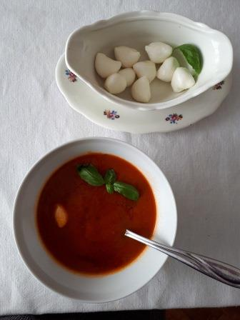
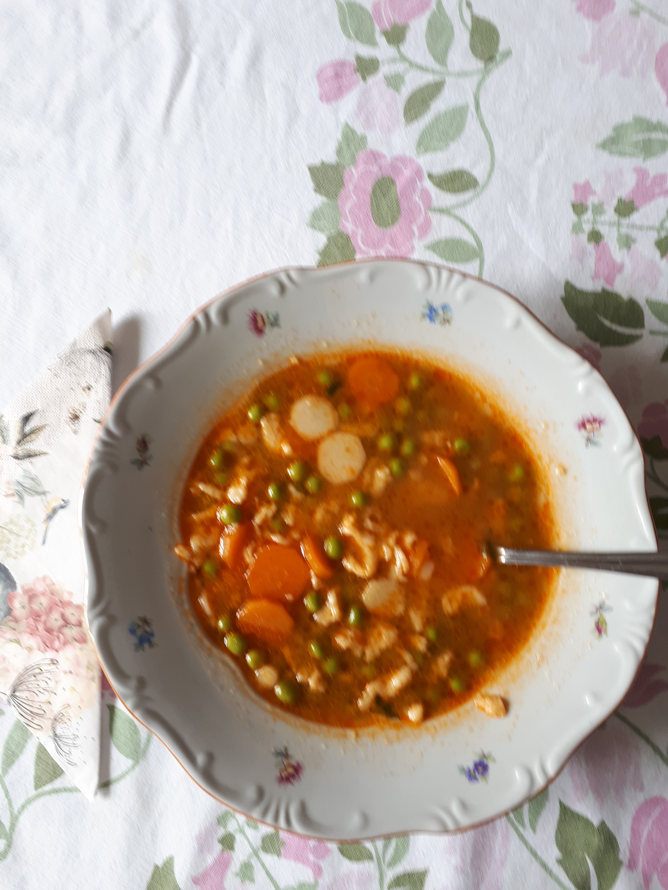

Paradicsom leves

Ezt a levest Ági lányom készítette, tőle vettük át,
mert igen finom és tápláló leves. Nyáron, amikor sok friss napérlelte paradicsom van,
ajánlom abból készítse el mindenki.
Hozzávalók:
Olíva olaj, lilahagyma, fokhagyma, sárgarépa, só, bors, paradicsom/paradicsomlé,
zöldségleves kocka, bazsalikom, mozzarella
- Olívaolajon pároljunk apróra vágott lilahagymát,fokhagymát.
- Dobjuk rá a vékony karikázott sárgarépát, sózzuk, borsozzuk.
- Tegyük rá az összedarabolt paradicsomot vagy öntsük fel paradicsomlével.
- Ízesíthetjük bazsalikommal, zöldségleves kockával.
- Főzzük készre, pürésítsük.
- Mozzarella golyóval, friss bazsalikom levéllel tálaljuk.
Zöldborsó leves

Édesanyám Törökszentmiklóson isteni zöldborsó levest készített nyár elején, amikor már van friss zsenge cukorborsó, sárgarépa, fehérrépa. Ez az első étel, amit én is elkészítek belőle.
Igazi családi kedvenc, de csak a csurgatott tészta betéttel vált klasszikussá.
Hozzávalók:
Vaj és olaj, zöldborsó, sárgarépa, fehérrépa, só, piros paprika, csokor petrezselyemzöld,
tojás, liszt
- Kevés vajon/olajon megpároljunk az apróra vágott zöldborsót és zöldséget.
- Párolás közben megsőzzuk, kevés piros paprikával megszórjuk.
- Öntsük fel vízzel és egy csokor petrezselyemzöldet dobjunk bele.
- Főzzük addig, amíg a zöldségek megpuhulnak.
- Egy felvert tojást keverjünk el 2 evőkanál liszttel, sózzuk.
- Az így elkészült nokedli tésztánál hígabb tésztát csurgassuk a forrásban lévő levesbe.
Tavaszi zöldségleves

A zöldségleves nem csak tavasszal, de bármikor gyors és tökéletes leves.
Bármilyen évszakról vagy alkalomról van szó, elrontani nem lehet.
Az alap zöldségleves hozzávalói bővíthetők az évszakok szerint, de gombával, habarással és tárkonnyal fűszerezve
egy igazán gazdag tejfölös tárkonyos zöldséglevest tálalhatunk.
Hozzávalók - alap zöldségleves:
Sárgarépa, fehérrépa, karalábé, szelet zeller, zöldborsó, vöröshagyma/újhagyma, vaj/olaj, só, bors, petrezselyemzöld,
babérlevél
- Kevés vajon/olajon megpároljunk az apróra vágott vöröshagymát/újhagymát, a felkockázott zöldségeket.
- Párolás közben sózzuk, borsozzuk.
- Öntsük fel vízzel és adjuk hozzá a petrezselyemzöldet.
- Főzzük addig, amíg a zöldségek éppen megroppannak.
- Egy felvert tojást keverjünk el 2 evőkanál liszttel, sózzuk.
- Az így elkészült nokedli tésztánál hígabb tésztát csurgassuk a forrásban lévő levesbe.
Ha a zöldségeket párolásakor megszórjuk egy kis paprikával, színt is adhatunk a levesünknek.
Tárkonyos zöldségleveshez gombával, borsóval készítsük el a züldséglevest. Amikor felöntjük vízzel,
fél citrom levét is adjunk hozzá. Ha a zöldségek megpuhultak, szórjuk a levesbe a tárkonyt és tejfölös
habarással főzzük készre.
A habaráshoz keverjük simára a lisztet a tejföllel, majd adjunk hozzá egy kis forró leves levet.
Ha kész a sima, meleg habarás, öntsük a levesbe, fözzük össze pár percig és készen is vagyunk.